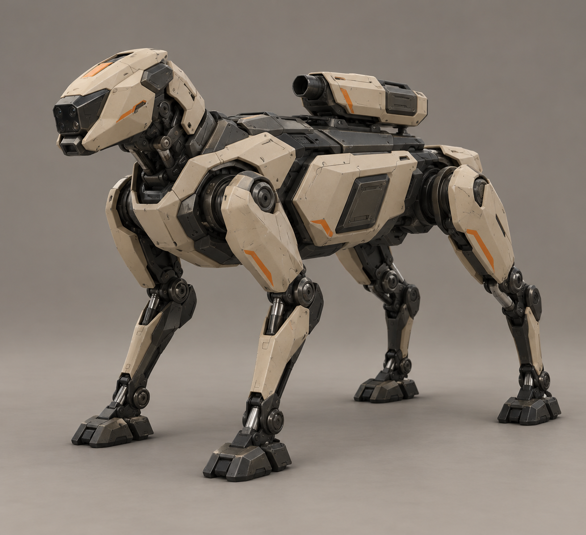
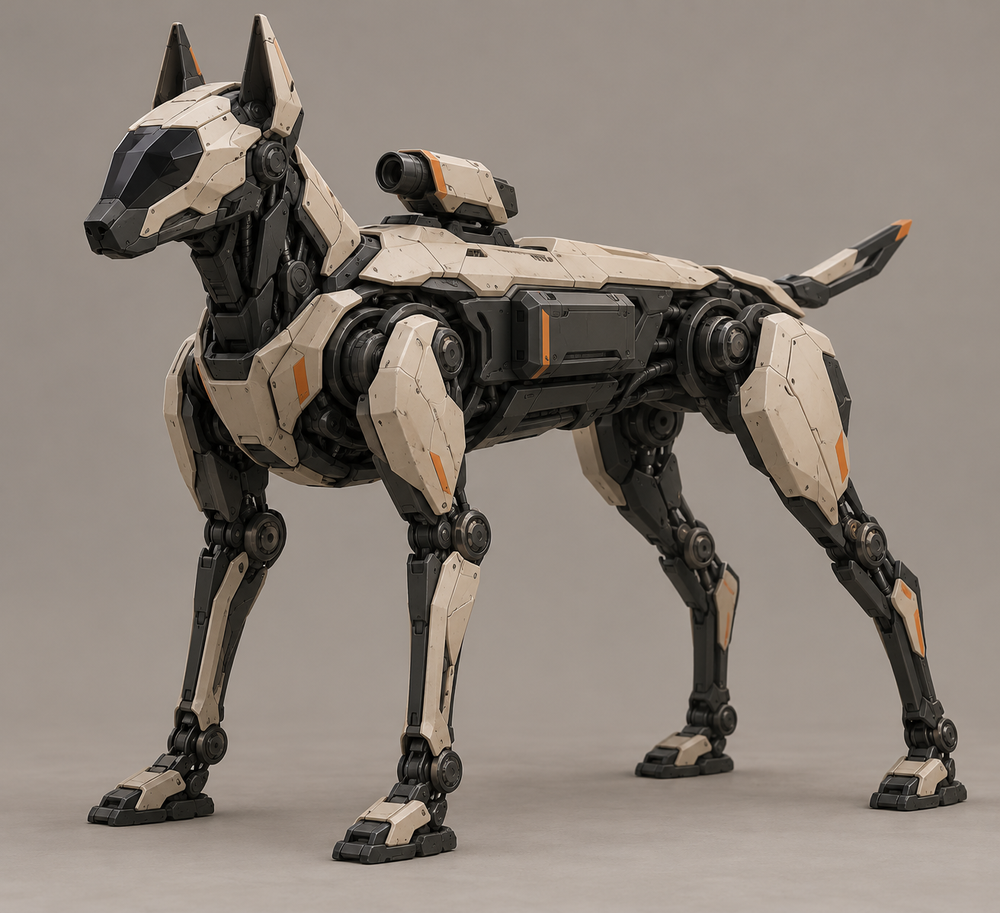
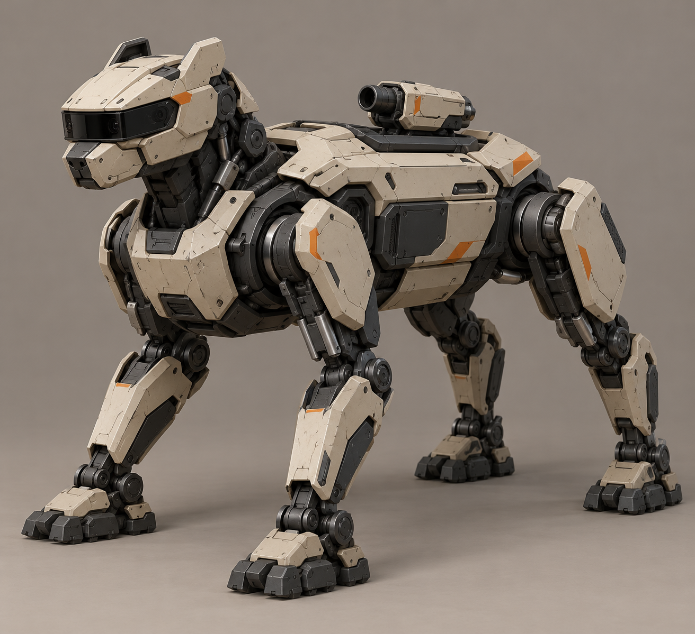
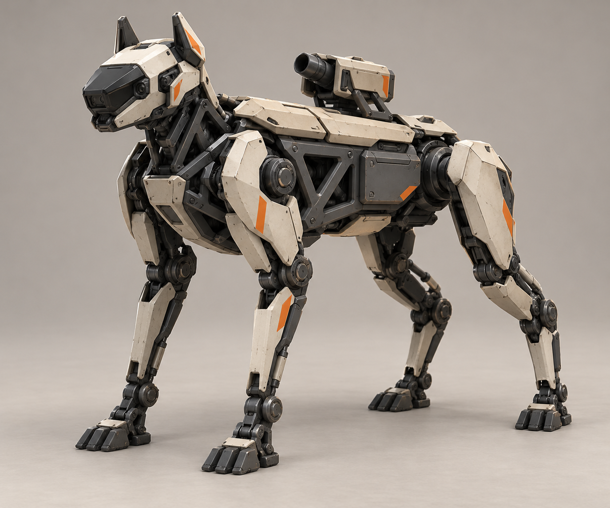
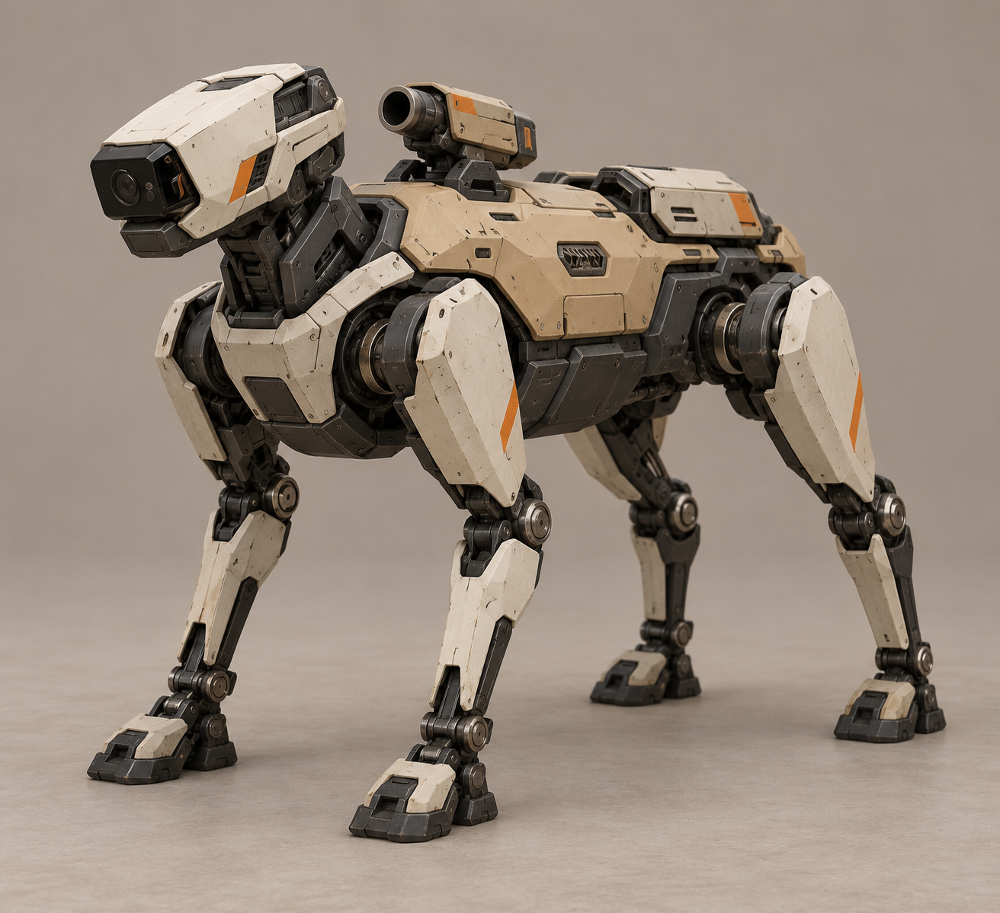
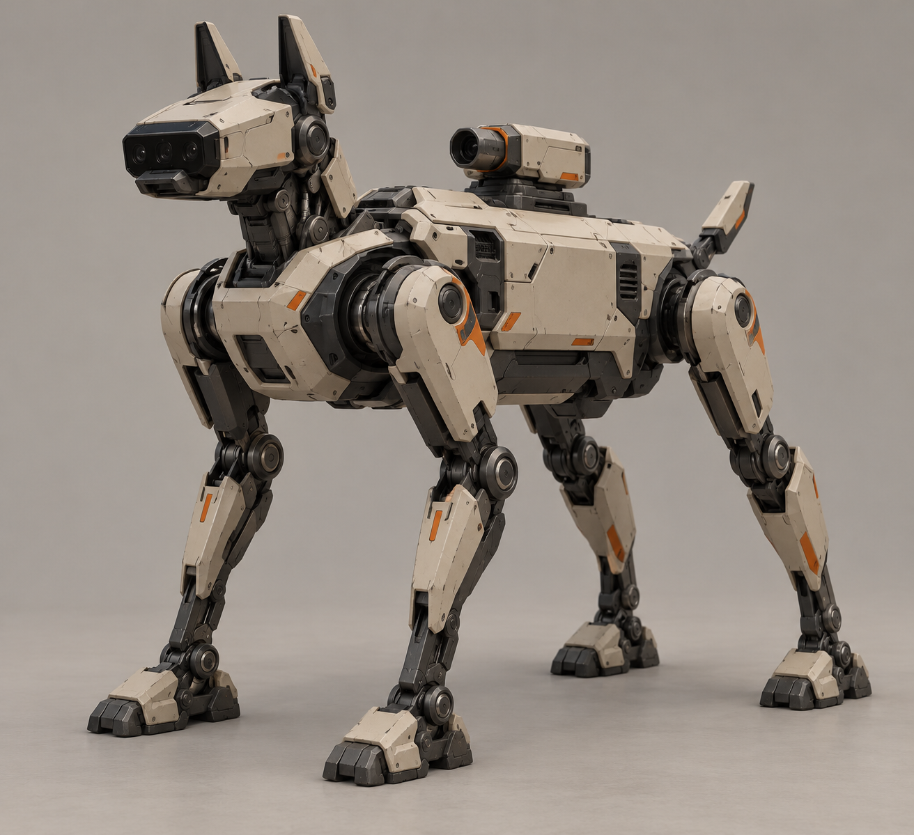
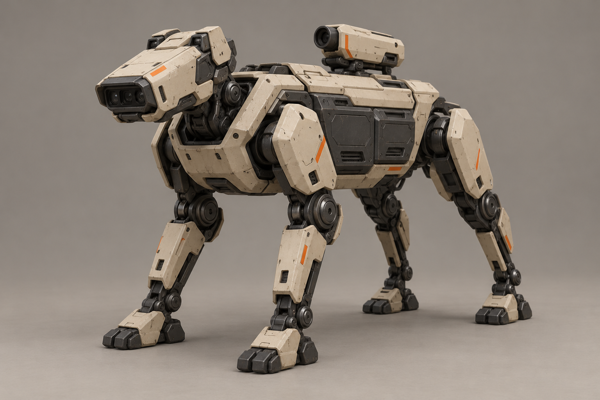
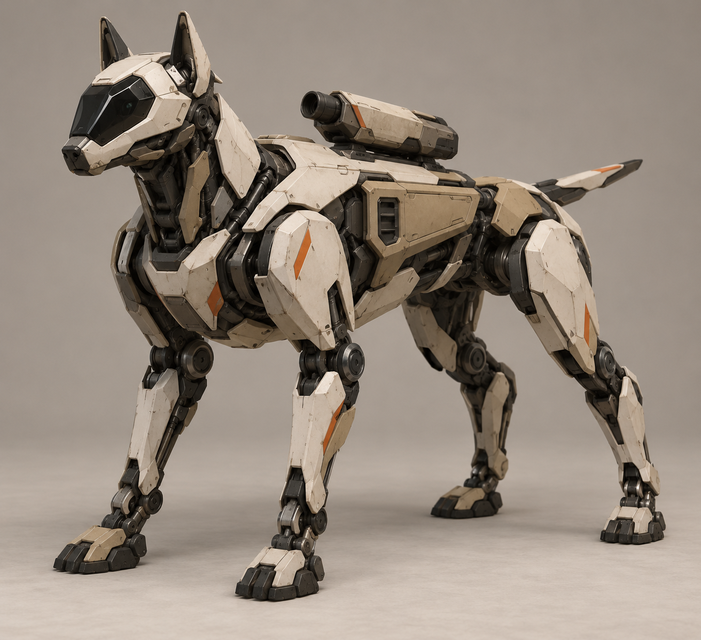

A «Клин»Низкий клиновидный корпус, короткая голова и плотно уложенный верхний модуль.Крупно · Промпт · Не выбран
B «Гончая»Вытянутый лёгкий корпус, длинные ноги и узкая сенсорная морда.Крупно · Промпт · Не выбран
C «Панцирь»Компактный широкий корпус и сегментированные светлые пластины.Крупно · Промпт · Не выбран
D «Рама»Открытый графитовый каркас и светлые накладки на плечах и бёдрах.Крупно · Промпт · Не выбран
E «Плечо»Смещённый верхний модуль и отдельная сенсорная головка.Крупно · Промпт · Не выбран
F «Следопыт»Приподнятая голова, компактная база и аккуратные полевые кожухи.Крупно · Промпт · Не выбран
G «Блок»Прямоугольный промышленный корпус и короткие мощные конечности.Крупно · Промпт · Не выбран
H «Стрела»Резкие вытянутые грани, тонкая талия и стреловидная голова.Крупно · Промпт · Не выбран